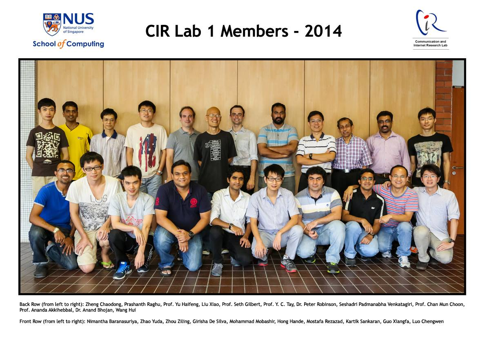

This page uses the Perfect 'Left Menu' 2 Column Liquid Layout by Matthew James Taylor. View more website layouts and web design articles.
I am a Research Fellow in NUS. I received his B.E degree in Computer Science and Engineering from the National Institute of Engineering, India in 2004 and my PhD from National University of Singapore in 2014. I worked as part of Communication and Internet Research group. My PhD supervisor is Prof Chan Mun Choon. I work on research problems related to data retrieval in constrained mobile networks and audio and sensor applications in smart devices. During my tenure in NUS, I have been part of the following research groups:

At School of Computing, National University of Singapore, I served as teaching assistant for the following lectures:
This page uses the Perfect 'Left Menu' 2 Column Liquid Layout by Matthew James Taylor. View more website layouts and web design articles.